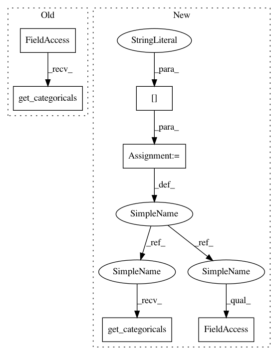

ac7f037e010a3531d8400c881ce4aec953772f57,src/deep_notebooks/dn_text_generation.py,,classification,#Any#Any#Any#,960
Before Change
def classification(spn, numerical_data, categorical_data):
categoricals = f.get_categoricals(spn)
misclassified = {}
data_dict = {}
for i in categoricals:
y_true = numerical_data[:,i].reshape(-1,1)
After Change
def classification(spn, numerical_data, dictionary):
context = dictionary["context"]
categoricals = context.get_categoricals()
misclassified = {}
data_dict = {}
for i in categoricals:
y_true = numerical_data[:, i].reshape(-1, 1)
query = np.copy(numerical_data)
y_pred = predict_mpe(spn, i, query, context).reshape(-1, 1)
misclassified[i] = np.where(y_true != y_pred)[0]
misclassified_instances = misclassified[i].shape[0]
print(query)
print(y_pred)
data_dict[i] = np.concatenate((query[:, :i], y_pred, query[:, i+1:]), axis=1)
printmd("For feature "{}" the SPN misclassifies {} instances, resulting in a precision of {}%.".format(
context.feature_names[i], misclassified_instances, np.round(100 * (1 - misclassified_instances/len(numerical_data)),2)))
return misclassified, data_dict
In pattern: SUPERPATTERN
Frequency: 3
Non-data size: 6
Instances
Project Name: SPFlow/SPFlow
Commit Name: ac7f037e010a3531d8400c881ce4aec953772f57
Time: 2018-09-21
Author: claas@voelcker.net
File Name: src/deep_notebooks/dn_text_generation.py
Class Name:
Method Name: classification
Project Name: SPFlow/SPFlow
Commit Name: b80425cb2611ee031c4fe43e5c7969173d0aaaf7
Time: 2018-09-20
Author: claas@voelcker.net
File Name: src/deep_notebooks/dn_text_generation.py
Class Name:
Method Name: node_categorical_description
Project Name: SPFlow/SPFlow
Commit Name: 04f97136134ac7c6605f34af91ec483cad3c604f
Time: 2018-09-19
Author: claas@voelcker.net
File Name: src/deep_notebooks/dn_text_generation.py
Class Name:
Method Name: categorical_correlations